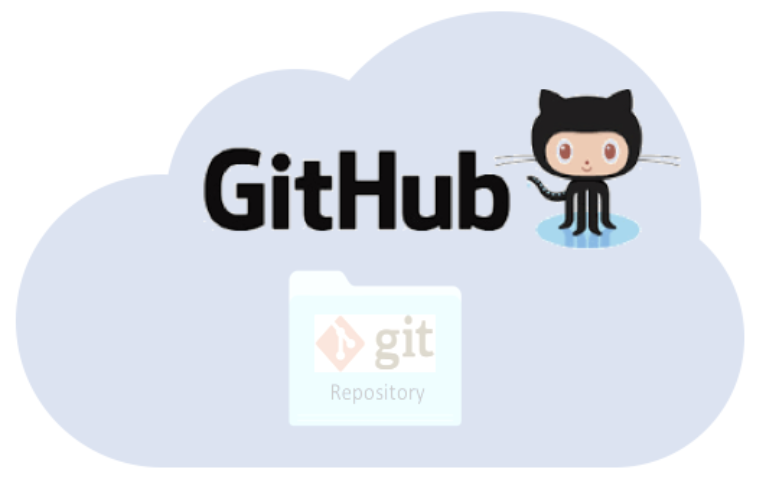

- Identify the distinct roles of Git for version control and GitHub for online collaboration.
- Explain how Git and GitHub integrate to support teamwork on shared projects.
- Apply the core workflow by creating a GitHub repository, cloning it locally, and managing changes in RStudio.
- Adopt best practices for using Git and GitHub effectively, including commit hygiene, branching, and repository management.
1 Introduction to Version Control
Every file in the scientific process changes. Manuscripts are edited. Figures get revised. Code gets fixed when bugs are discovered. Sometimes those fixes lead to even more bugs, leading to more changes in the code base. Data files get combined together. Sometimes those same files are split and combined again. In just one research project, we can expect thousands of changes to occur.
These changes are important to track, and yet, we often use simplistic file names to do so. Many of us have experienced renaming a document or script multiple times with the disingenuous addition of “final” to the file name (like the comic above demonstrates).
You might think there is a better way, and you’d be right: version control. Version control provides an organized and transparent way to track changes in code and additional files. This practice was designed for software development, but is easily applicable to scientific programming.
The version control system we’ll be diving into is Git, the most widely used modern version control system in the world.
With Git we can enhance our workflow:
- Eliminate the need for cryptic filenames and comments to track our work.
- Provide detailed descriptions of our changes through commits, making it easier to understand the reasons behind code modifications.
- Use commits to access and even execute older versions of our code.
- Assign meaningful tags to specific versions of our code.
- Additionally, GitHub, as a centralized hosting platform for all the git repositories, offers a powerful distributed feature. Multiple individuals can work on the same analysis concurrently on their own computers, with the ability to merge everyone’s changes together.
2 Introduction to Git + GitHub
2.1 What exactly are Git and GitHub?
Git:
- an open-source distributed version control software
- designed to manage the versioning and tracking of source code files and project history
- operates locally on your computer, allowing you to create repositories, and track changes
- provides features such as committing changes, branching and merging code, reverting to previous versions, and managing project history
- works directly with the files on your computer and does not require a network connection to perform most operations
- primarily used through the command-line interface (CLI, e.g. Terminal), but also has various GUI tools available (e.g. RStudio IDE)

GitHub:
- online platform and service built around Git
- provides a centralized hosting platform for Git repositories
- allows us to store, manage, and collaborate on their Git repositories in the cloud
- offers additional features on top of Git, such as a web-based interface, issue tracking, project management tools, pull requests, code review, and collaboration features
- enables easy sharing of code with others, facilitating collaboration and contribution to open source projects
- provides a social aspect, allowing users to follow projects, star repositories, and discover new code

2.2 Understanding how local working files, Git, and GitHub all work together
It can be a bit daunting to understand all the moving parts of the Git / GitHub life cycle (i.e. how file changes are tracked locally within repositories, then stored for safe-keeping and collaboration on remote repositories, then brought back down to a local machine(s) for continued development). It gets easier with practice, but we’ll explain (first in words, then with an illustration) at a high-level how things work:
What is the difference between a “normal” folder vs. a Git repository
Whether you’re a Mac or a PC user, you’ll likely have created a folder at some point in time for organizing files. Let’s pretend that we create a folder, called myFolder/, and add two files: myData.csv and myAnalysis.R. The contents of this folder are not currently version controlled – meaning, for example, that if we make some changes to myAnalysis.R that don’t quite work out, we have no way of accessing or reverting back to a previous version of myAnalysis.R (without remembering/rewriting things, of course).
Git allows you to turn any “normal” folder, like myFolder/, into a Git repository – you’ll often see/hear this referenced as “initializing a Git repository”. When you initialize a folder on your local computer as a Git repository, a hidden .git/ folder is created within that folder (e.g. myFolder/.git/) – this .git/ folder is the Git repository. As you use Git commands to capture versions or “snapshots” of your work, those versions (and their associated metadata) get stored within the .git/ folder. This allows you to access and/or recover any previous versions of your work. If you delete .git/, you delete your project’s history.
Let’s Look at a GitHub Repository
Here are some things you might notice:
- File view: A list of files and folders, showing when each was last modified and who made the most recent changes.
- Commit history: If you open the “Commits” tab, you can see the history of changes across all files. For example, you might notice that one of the collaborators was fixing errors in last commit.
- Detailed changes: Drilling into an individual commit reveals exactly what was changed in each file.
Tracking these changes—and linking them to released versions of code, data, and documentation—is exactly what Git and GitHub are designed for. They are especially powerful tools for managing scientific workflows, ensuring that code, figures, and manuscripts are versioned and reproducible.
2.3 Git Vocabulary & Commands
We know the world of Git and GitHub can be daunting. Use these tables as references while you use Git and GitHub, and we encourage you to build upon this list as you become more comfortable with these tools.
This table contains essential terms and commands that complement intro to Git skills. They will get you far on personal and individual projects.
| Term | Git Command(s) | Definition |
|---|---|---|
| Add/Stage | git add [file] |
Staging marks a modified file in its current version to go into your next commit snapshot. You can also stage all modified files at the same time using git add . |
| Commit | git commit |
Records changes to the repository. |
| Commit Message | git commit -m "my commit message" |
Records changes to the repository and include a descriptive message (you should always include a commit message!). |
| Fetch | git fetch |
Retrieves changes from a remote repository but does not merge them into your local working file(s). |
| Pull | git pull |
Retrieves changes from a remote repository and merges them into your local working file(s). |
| Push | git push |
Sends local commits to a remote repository. |
| Status | git status |
Shows the current status of the repository, including (un)staged files and branch information. |
This table includes more advanced Git terms and commands that are commonly used in both individual and collaborative projects.
| Term | Git Command(s) | Definition |
|---|---|---|
| Branch | git branch |
Lists existing branches or creates a new branch. |
| Checkout | git checkout [branch] |
Switches to a different branch or restores files from a specific commit. |
| Clone | git clone [repository] |
Creates a local copy of a remote repository. |
| Diff | git diff |
Shows differences between files, commits, or branches. |
| Fork | - | Creates a personal copy of a repository under your GitHub account for independent development. |
| Log | git log |
Displays the commit history of the repository. |
| Merge | git merge [branch] |
Integrates changes from one branch into another branch. |
| Merge Conflict | - | Occurs when Git cannot automatically merge changes from different branches, requiring manual resolution. |
| Pull Request (PR) | - | A request to merge changes from a branch into another branch, typically in a collaborative project. |
| Rebase | git rebase |
Integrates changes from one branch onto another by modifying commit history. |
| Remote | git remote |
Manages remote repositories linked to the local repository. |
| Repository | git init |
A directory where Git tracks and manages files and their versions. |
| Stash | git stash |
Temporarily saves changes that are not ready to be committed. |
| Tag | git tag |
Assigns a label or tag to a specific commit. |
Git has a rich set of commands and features, and there are many more terms beyond either table. Learn more by visiting the git documentation.
3 Git–GitHub Workflow (at a glance)
There are many valid workflows.
- Fresh start: Create a repo on GitHub → clone locally → start coding.
- Existing project: Create a repo on GitHub → clone locally → add your existing files.
- Collaborator workflow: Clone an existing GitHub repo → edit locally → commit & push.
In this course we’ll demonstrate: Create a remote repository and clone to your local computer.
Exercise : Create a remote repository on GitHub
If you are successful, you’ve now created your first repository! It has a couple of files that GitHub created for you: README.md, LICENSE, and .gitignore.
Exercise: Modify the README File
Congratulations, you’ve now authored your first versioned commit! If you navigate back to the GitHub page for the repository, you’ll see your commit listed there, as well as the rendered README.md file.
Exercise: Clone to Local Computer and use Git locally in RStudio
If you are prompted to provide your GitHub username and password when Pushing, it’s a good indicator that you did not set your GitHub Personal Access Token (PAT) correctly. You can redo the steps outlined in the GitHub Authentication section to (re)set your PAT, then Push again.
4 Best Practices in Git/GitHub
4.1 File Size & Data
- Keep repositories small (< 1 GB recommended)
- Avoid individual files > 50 MB (GitHub hard limit is 100 MB)
- Use Git LFS for large binary files (media, big data)
- Store bulky datasets externally (e.g., EDI, Google Drive, Box) and link to them
4.2 Account & Security
- Enable two-factor authentication (2FA) on GitHub
- Never commit secrets (API keys, passwords)
- Use .gitignore to exclude sensitive or unnecessary files
- Authenticate with Personal Access Tokens (PATs) instead of passwords
- Regularly review and revoke old PATs or third-party app access
4.3 Using .gitignore to Keep Repos Clean
- Prevents sensitive or unnecessary files from being tracked by Git
- Common examples: large datasets, passwords, temporary files, system files
- Helps keep repositories reproducible and clutter-free
4.4 Writing a Good README
- Helps others (and your future self) quickly understand your project
- Encourages reuse and collaboration
- Acts as documentation “front door”
4.5 Commit & Branching Practices
- Write concise messages that explain why the change was made
- Commit early and often — avoid giant all-in-one commits
- Each commit should represent a logical unit of work
- Use branches for experimental work, Merge changes back into
mainusing pull requests
- Delete merged branches to keep history tidy
5 Go further with Git
There is much more to Git and GitHub than we can cover in this brief tutorial. Later modules in the working group training series delve into additional advanced topics, including:
- Resolving merge conflicts
- Working with branches and merges
- Choosing between pull requests and direct contributions
- Using GitHub Issues for project management and team collaboration
Find the video recording of this workshop in this link.
6 Git resources
- Pro Git Book
- Happy Git and GitHub for the useR
- GitHub Documentation
- Learn Git Branching is an interactive tool to learn Git on the command line
- Software Carpentry Version Control with Git
- Bitbucket’s tutorials on Git Workflows